Cargando...
Mapa Educativo Interactivo de la Provincia del Chubut
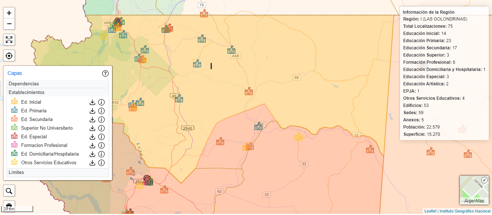Esta es una herramienta de visualización, gestión y análisis de información georreferenciada con el fin de planificar y contribuir al fortalecimiento del sistema educativo a nivel local, regional y provincial.
Controles
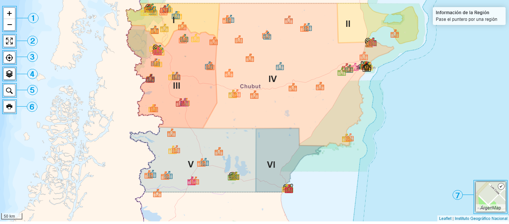1. Zoom, 2. Permite extender el mapa a la pantalla completa, 3. Permite centrar el mapa, 4. Despliega el listado de las capas permitiendo activar o desactivar la que se requiera visualizar en el mapa, 5. Permite la búsqueda de establecimientos por distintos criterios, 6. Permite imprimir el mapa, 7. Permite seleccionar otros mapas base de preferencia.
Capas
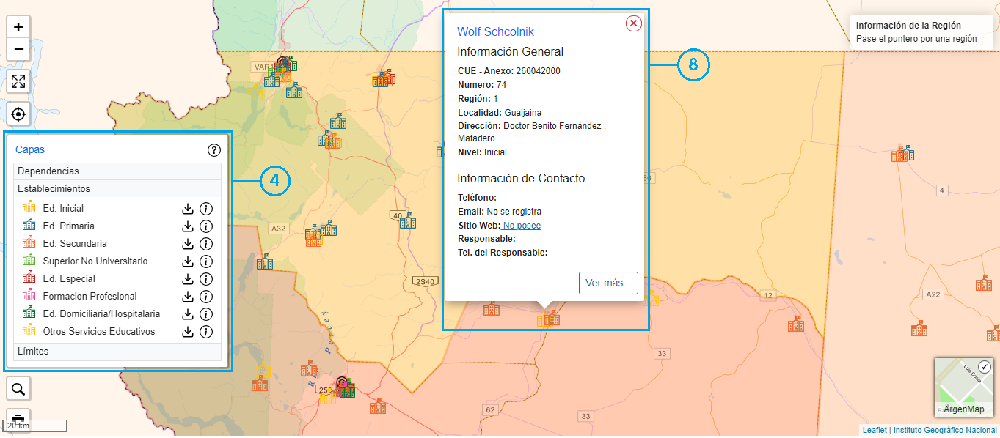Cada capa representa un conjunto organizado y procesado de datos que estan identificados por un tipo de marcador dentro del listado de capas desplegado (4). Los marcadores se disponen sobre el mapa de acuerdo a su ubicación geográfica y permiten acceder a su información (8), al hacer clic sobre ellos.
¿Esta seguro que desea eliminar esta capa?
Permiten la búsqueda de establecimientos por los siguientes criterios:
Buscar establecimientos por Número
1. Hacer clic sobre la pestaña 'Número'.
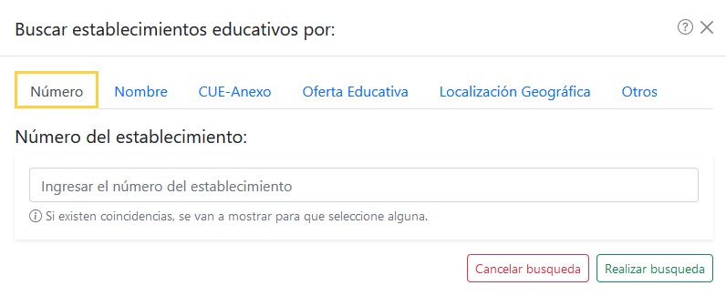2. Ingresar el número (o parte del número) del establecimiento. Este es un campo obligatorio.
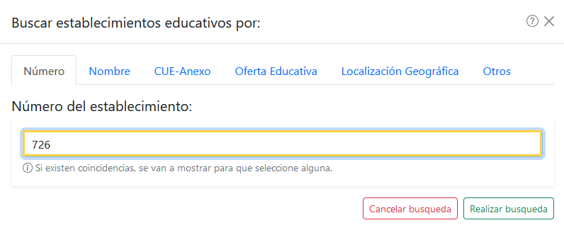3. Hacer clic sobre el botón 'Realizar búsqueda'.
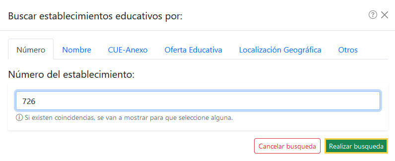4. Si el número es válido, y si existen coincidencias, se van a mostrar, para que se seleccione alguna, caso contrario se va a mostrar un mensaje indicando una situación de error.
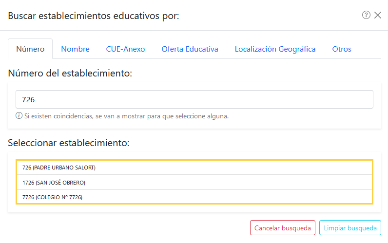5. Llegado a este punto, se puede seleccionar uno de los establecimientos haciendo clic sobre alguna de las opciones mostradas, se puede cancelar la búsqueda haciendo clic sobre el botón 'Cancelar búsqueda' o realizar una nueva búsqueda haciendo clic sobre el botón 'Limpiar búsqueda'.
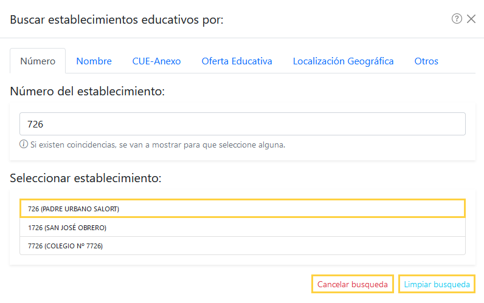6. Para el caso de que se haya hecho clic sobre una de las opciones mostradas, se va a agregar una nueva capa de consulta con su correspondiente marcador en el mapa.
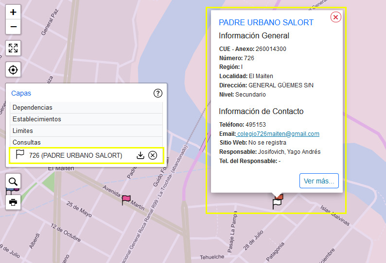 Volver al principioBuscar establecimientos por Nombre
1. Hacer clic sobre la pestaña 'Nombre'.
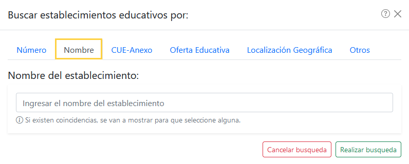2. Ingresar el nombre (o parte del nombre) del establecimiento. Este es un campo obligatorio.
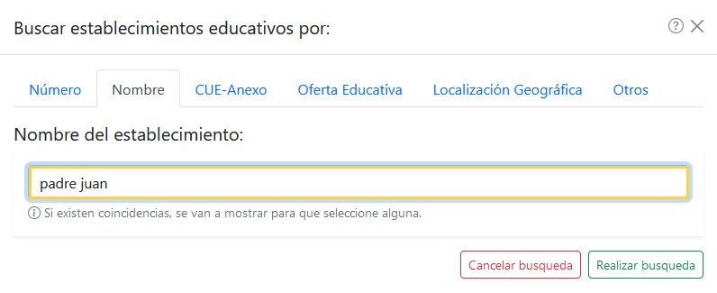3. Hacer clic sobre el botón 'Realizar búsqueda'.
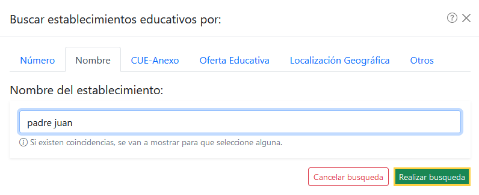4. Si el nombre es válido, y si existen coincidencias, se van a mostrar, para que se seleccione alguna, caso contrario se va a mostrar un mensaje indicando una situación de error.
5. Llegado a este punto, se puede seleccionar uno de los establecimientos haciendo clic sobre alguna de las opciones mostradas, se puede cancelar la búsqueda haciendo clic sobre el botón 'Cancelar búsqueda' o realizar una nueva búsqueda haciendo clic sobre el botón 'Limpiar búsqueda'.
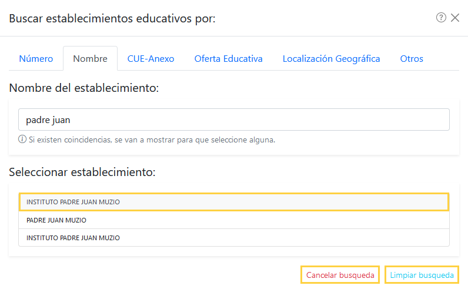6. Para el caso de que se haya hecho clic sobre una de las opciones mostradas, se va a agregar una nueva capa de consulta con su correspondiente marcador en el mapa.
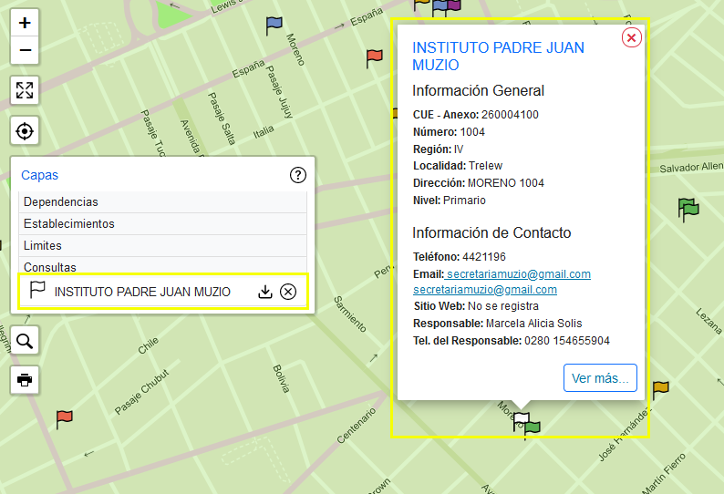 Volver al principioBuscar establecimientos por CUE-Anexo
1. Hacer clic sobre la pestaña 'CUE-Anexo'.
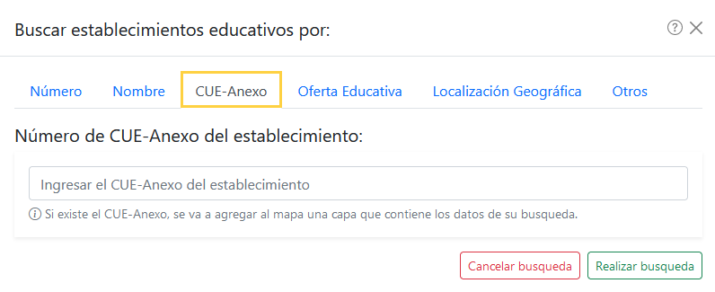2. Ingresar el nro de CUE-Anexo del establecimiento. Este es un campo obligatorio.
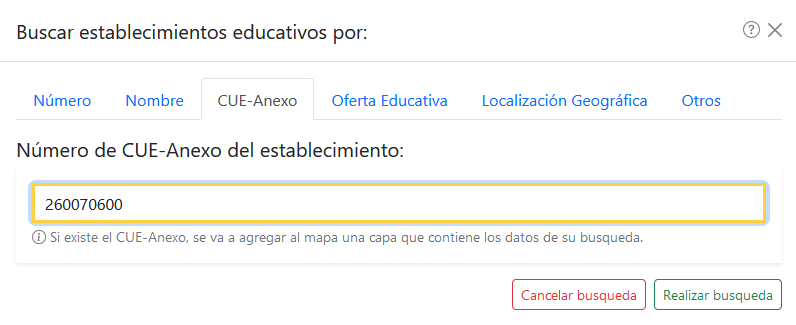3. Llegado a este punto, se puede hacer clic sobre el botón 'Realizar búsqueda', o se puede cancelar la búsqueda haciendo clic sobre el botón 'Cancelar búsqueda'.
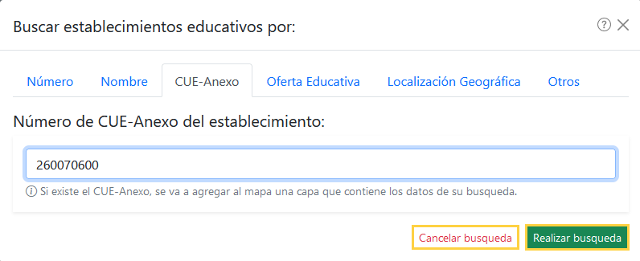4. Para el caso de que se haya hecho clic sobre 'Realizar búsqueda', si el CUE-Anexo es válido, y si existe una coincidencia, se va a agregar una nueva capa de consulta con su correspondiente marcador en el mapa, caso contrario se va a mostrar un mensaje indicando una situación de error.
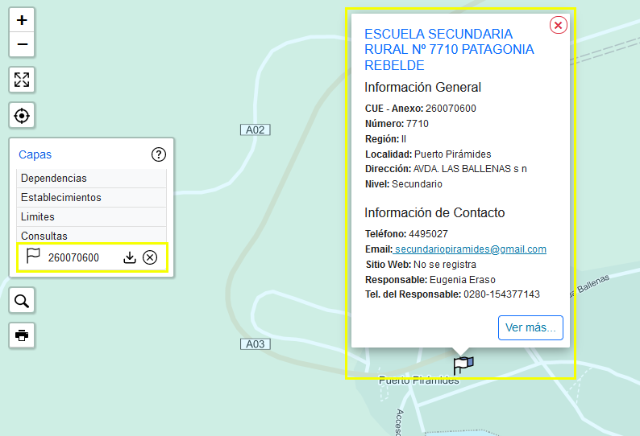 Volver al principioBuscar establecimientos por Oferta Educativa
1. Hacer clic sobre la pestaña 'Oferta Educativa'.
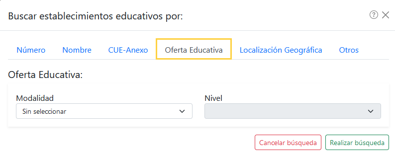2. Seleccionar la Modalidad. Este es un campo obligatorio.
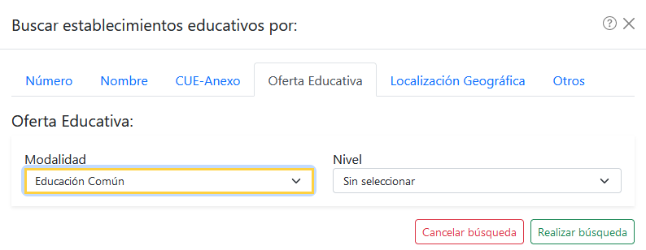3. Seleccionar, o no, el Nivel. Este es un campo opcional.
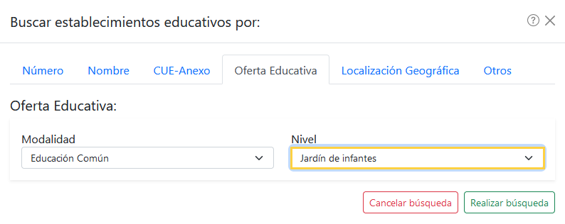3. En el caso de que existan más opciones, estas se van a habilitar. Estos campos son opcionales. Seleccionar los que considere necesarios.
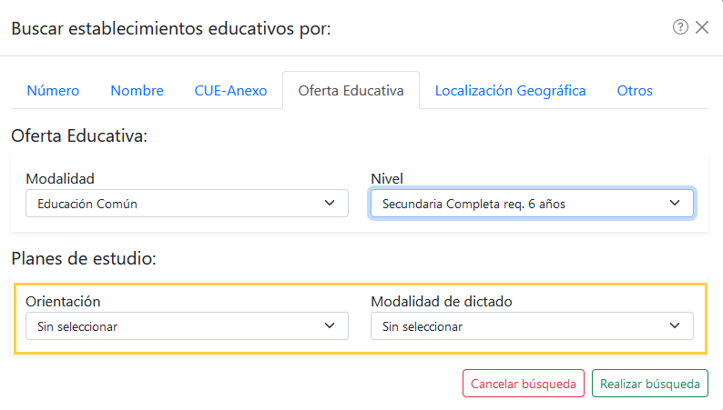5. Llegado a este punto, se puede hacer clic sobre el botón 'Realizar búsqueda', o se puede cancelar la búsqueda haciendo clic sobre el botón 'Cancelar búsqueda'.
6. Para el caso de que se haya hecho clic sobre 'Realizar búsqueda', si no existen coincidencias, se va a mostrar un mensaje indicando una situación de error, caso contrario se va a agregar una nueva capa de consulta con sus correspondientes marcadores en el mapa, dependiendo de la opciones seleccionadas se puede obtener una capa con solo un resultado o con varios.
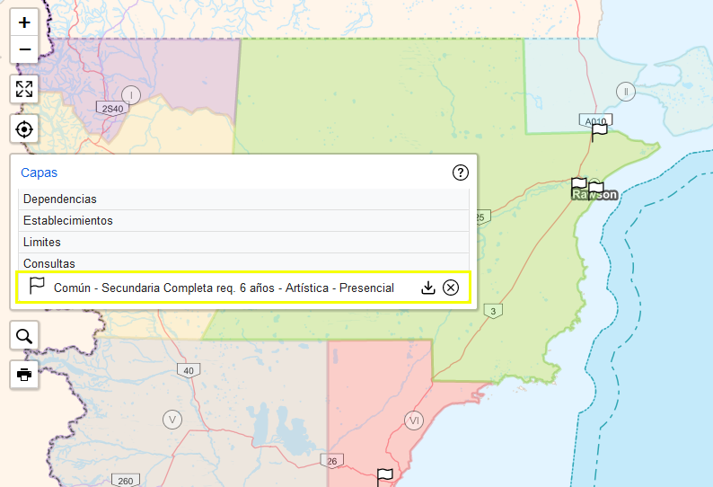 Volver al principioBuscar establecimientos por Localización Geográfica
1. Hacer clic sobre la pestaña 'Localización Geográfica'.
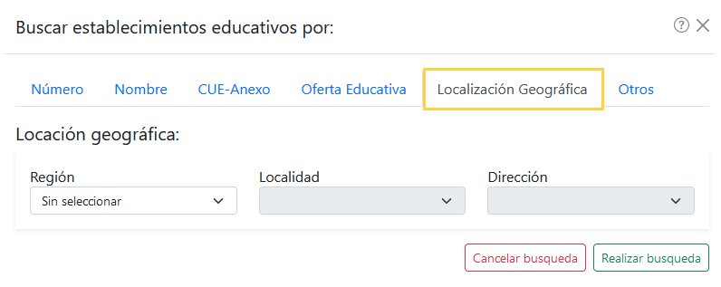2. Seleccionar el nro. de Región. Este es un campo obligatorio.
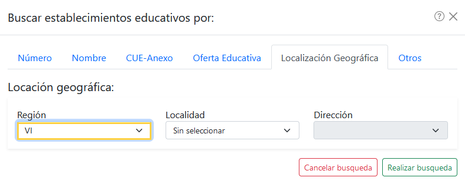3. Seleccionar, o no, la localidad. Este es un campo opcional.
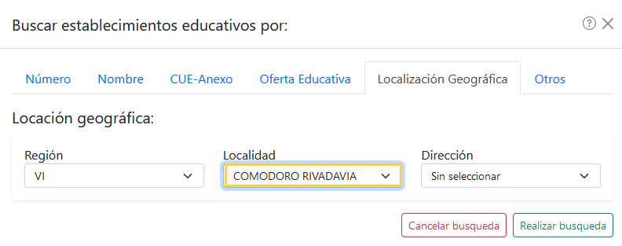4. Seleccionar, o no, la dirección. Este es un campo opcional. En este ejemplo, no se va a seleccionar la dirección.
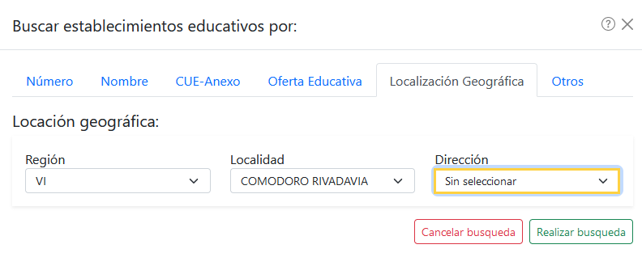5. Llegado a este punto, se puede hacer clic sobre el botón 'Realizar búsqueda', o se puede cancelar la búsqueda haciendo clic sobre el botón 'Cancelar búsqueda'.
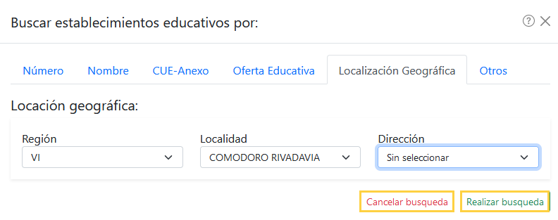6. Para el caso de que se haya hecho clic sobre 'Realizar búsqueda', si no existen coincidencias, se va a mostrar un mensaje indicando una situación de error, caso contrario se va a agregar una nueva capa de consulta con sus correspondientes marcadores en el mapa, dependiendo de la opciones seleccionadas se puede obtener una capa con solo un resultado o con varios.
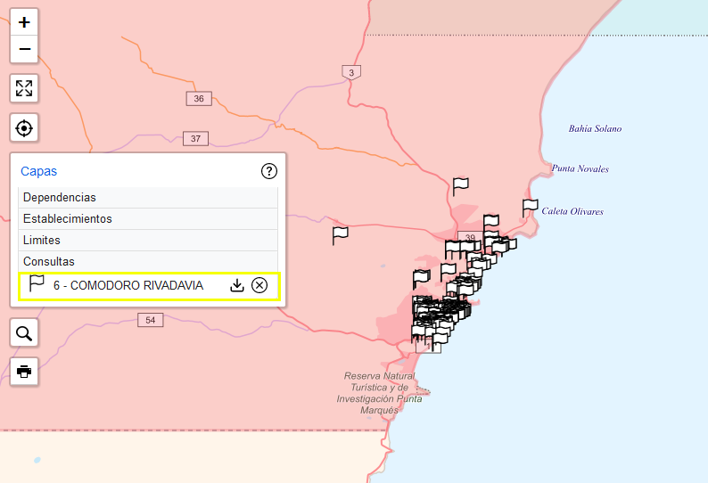 Volver al principioBuscar establecimientos por Otros criterios
1. Hacer clic sobre la pestaña 'Otros'.
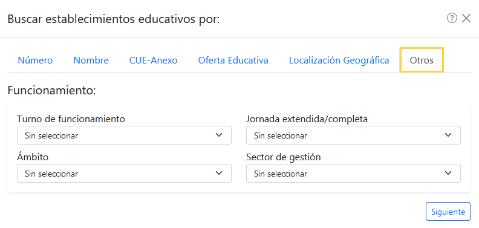2. En esta búsqueda, solo es obligatorio seleccionar como mínimo el valor de uno de los campos. En este ejemplo, solo se seleccionó el turno mañana.
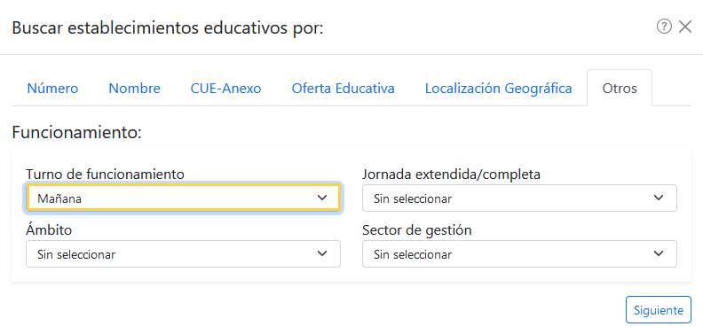3. Estos campos estan organizados, en tres pestañas, para pasar entre pestañas, se puede hacer clic sobre los botones 'Anterior' y 'Siguiente'.
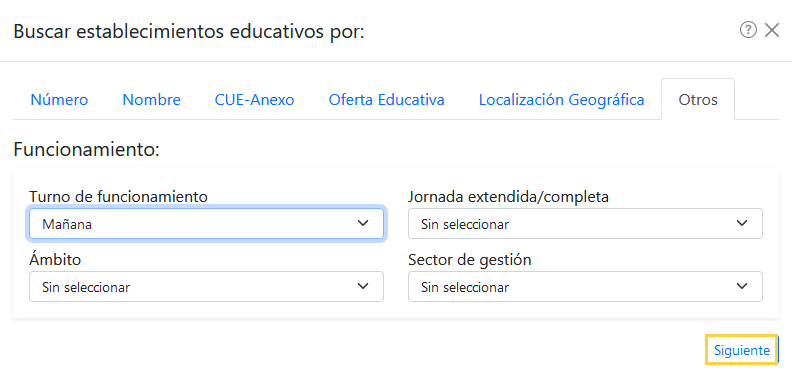 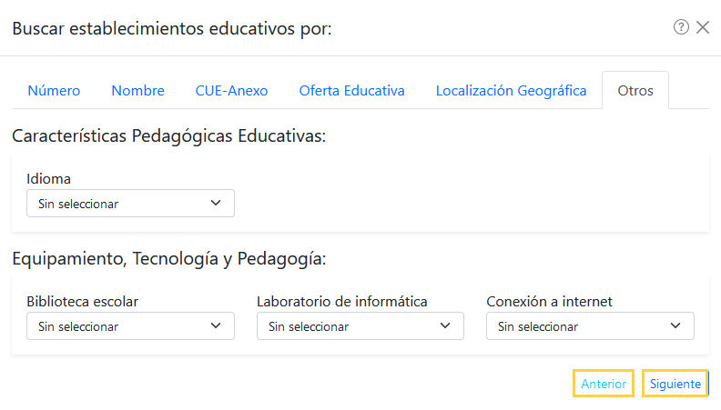4. Al llegar a la última pestaña, es necesario, poner un nombre a la capa que se va a agregar al mapa.
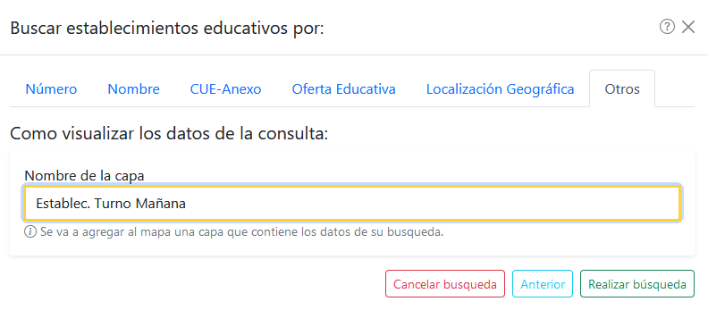5. Llegado a este punto, se puede hacer clic sobre el botón 'Realizar búsqueda', o se puede cancelar la búsqueda haciendo clic sobre el botón 'Cancelar búsqueda'.
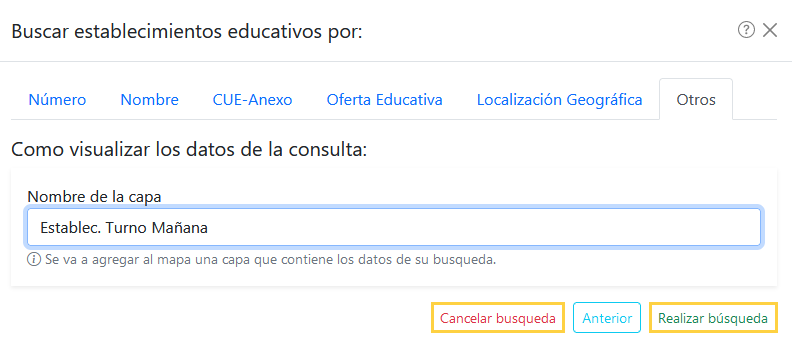6. Para el caso de que se haya hecho clic sobre 'Realizar búsqueda', si no existen coincidencias, se va a mostrar un mensaje indicando una situación de error, caso contrario se va a agregar una nueva capa de consulta con sus correspondientes marcadores en el mapa, dependiendo de la opciones seleccionadas se puede obtener una capa con solo un resultado o con varios.
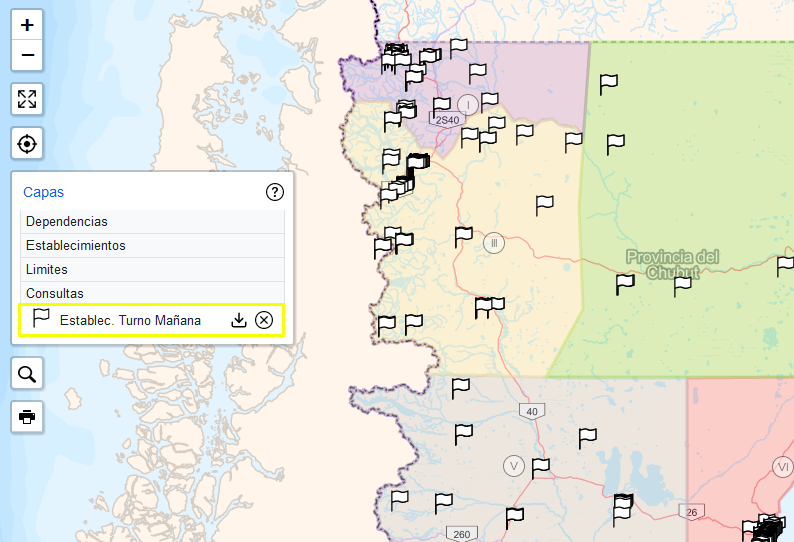 Volver al principio